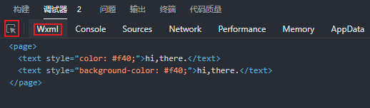

| item | desc |
|---|---|
| <view> | 视图；块标签；类似 <div> |
| <text> | 文本；行标签；只能嵌套文本标签；类似 <span> |
| <navigator> | 导航；类似 <a> |
| <image> | 图像；默认300px*240px；类似 <img> |
| <video> | 视频；默认300px*225px |
| <audio> | 音频；系统不建议使用 |
<view> {{msg}} </view>
<view> {{age + 2}} </view>
<view> {{age>=18 ? 'Welcome' : 'Bye'}} </view>
<image src="{{src}}" mode=""/>
<view class="{{isActive?'bold':''}}">动态类的三元表达式</view>
<view class="title {{isActive?'bold':'normal'}}">静态类和动态类的组合形式</view>
<text style="color: {{color}};">内联样式</text>
<view class="box" style="background-image: url({{src}});">类和内联样式可以共同使用</view>

<view class="{{'bold':isActive}}">错误！简洁起见，小程序不支持对象形式</view>
<text style="backgroundColor: {{color}};">居然不支持驼峰语法</text>